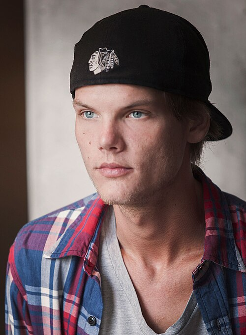

Avicii

Avicii, egentligen Tim Bergling, ursprungligen Lidén,[3] född 8 september 1989 i Oscars församling i Stockholm,[1] död 20 april 2018 i Muskat i Oman, var en svensk discjockey, musiker, remixare, låtskrivare samt musikproducent.
Flera musikpublikationer anger honom som en av de DJ:ar som populariserade den elektroniska musiken i början av 2010-talet, och åren 2011–2015 rankades han följdriktigt på plats 3–7 på DJ Mag:s lista över världens 100 bästa DJ:ar.